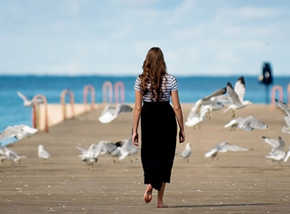
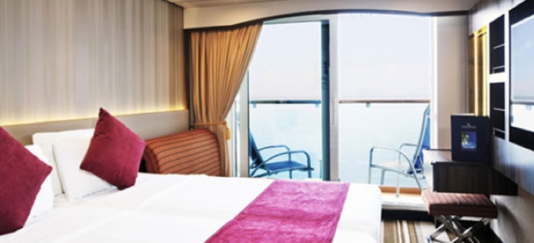

目的地
精选目的地 精彩航线
长崎
长崎（Nagasaki）是日本九州岛西岸著名港市，长崎县首府。长崎市位于日本的西端，自古以来就是沟通中国与日本的桥梁。长崎市是日本锁国时代少数对外开放的港口之一，是一个交通枢纽城市，英国、葡萄牙、荷兰都是通过它与日本有了密切的往来。长崎与朝鲜半岛也有很深的渊源。长崎也是继广岛之后世界上第二个被原子弹毁灭的城市。气候长崎是亚热带气候，跟东南亚比较相似，具有浓厚的南国风情。一年中的最高气温和最低气温的温差较小，平均摄氏16-17度。夏季温度为25度左右；冬季温度为零上10度左右，夏天是去长崎旅游的最佳季节。热门景点哥拉巴园 公园建于1864年，当时西方各国相继来航，强迫幕府开国。热门景点哥拉巴园 公园建于1864年，当时西方各国相继来航，强迫幕府开国。热门景点哥拉巴园 公园建于1864年，当时西方各国相继来航，强迫幕府开国。
长崎（Nagasaki）是日本九州岛西岸著名港市，长崎县首府。长崎市位于日本的西端，自古以来就是沟通中国与日本的桥梁。长崎市是日本锁国时代少数对外开放的港口之一，是一个交通枢纽城市，英国、葡萄牙、荷兰都是通过它与日本有了密切的往来。长崎与朝鲜半岛也有很深的渊源。长崎也是继广岛之后世界上第二个被原子弹毁灭的城市。气候长崎是亚热带气候，跟东南亚比较相似，具有浓厚的南国风情。一年中的最高气温和最低气温的温差较小，平均摄氏16-17度。夏季温度为25度左右；冬季温度为零上10度左右，夏天是去长崎旅游的最佳季节。热门景点哥拉巴园 公园建于1864年，当时西方各国相继来航，强迫幕府开国。热门景点哥拉巴园 公园建于1864年，当时西方各国相继来航，强迫幕府开国。热门景点哥拉巴园 公园建于1864年，当时西方各国相继来航，强迫幕府开国。


长崎（Nagasaki）是日本九州岛西岸著名港市，长崎县首府。长崎市位于日本的西端，自古以来就是沟通中国与日本的桥梁。长崎市是日本锁国时代少数对外开放的港口之一，是一个交通枢纽城市，英国、葡萄牙、荷兰都是通过它与日本有了密切的往来。长崎与朝鲜半岛也有很深的渊源。长崎也是继广岛之后世界上第二个被原子弹毁灭的城市。气候长崎是亚热带气候，跟东南亚比较相似，具有浓厚的南国风情。一年中的最高气温和最低气温的温差较小，平均摄氏16-17度。夏季温度为25度左右；冬季温度为零上10度左右，夏天是去长崎旅游的最佳季节。热门景点哥拉巴园 公园建于1864年，当时西方各国相继来航，强迫幕府开国。热门景点哥拉巴园 公园建于1864年，当时西方各国相继来航，强迫幕府开国。热门景点哥拉巴园 公园建于1864年，当时西方各国相继来航，强迫幕府开国。

攻略游记

去这座小岛看一场“蓝色荧光派对”
夏天是看海的最好季节。对我这个“海迷”来说，去发现不同的海域是打开夏天最好的方式。去这座小岛看一场“蓝色荧光派对”
夏天是看海的最好季节。对我这个“海迷”来说，去发现不同的海域是打开夏天最好的方式。去这座小岛看一场“蓝色荧光派对”
夏天是看海的最好季节。对我这个“海迷”来说，去发现不同的海域是打开夏天最好的方式。去这座小岛看一场“蓝色荧光派对”
夏天是看海的最好季节。对我这个“海迷”来说，去发现不同的海域是打开夏天最好的方式。